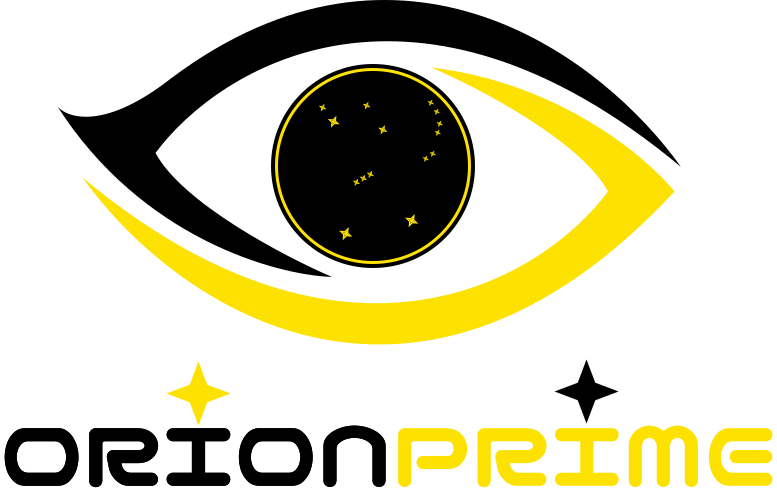

Desenvolvimento
Estruturação de interfaces e funcionalidades com código organizado e fácil de manter
GRUPO DE DESENVOLVIMENTO · 2026
A Orion Prime é o grupo responsável por planejar e desenvolver soluções de software, unindo programação, organização de dados e atenção às necessidades das pessoas

01 / O QUE É?
A Orion Prime organiza o trabalho de seus integrantes em torno de uma ideia: usar o desenvolvimento de software para responder a problemas concretos
A Equipe reúne planejamento, interface, lógica de programação e estrutura de dados em um processo de desenvolvimento que pode ser testado, explicado e aprimorado. Cada etapa é pensada para que a solução seja útil e fácil de compreender
02 / COMO TRABALHAMOS
O desenvolvimento considera tanto o funcionamento do sistema quanto a forma como as pessoas vão utilizá-lo
Estruturação de interfaces e funcionalidades com código organizado e fácil de manter
Organização das informações e comunicação entre a interface, a aplicação e o banco de dados
Informações apresentadas com clareza, considerando diferentes necessidades de uso
ORION PRIMEPROJETO ACADÊMICO · 2026
03 / QUEM FAZ PARTE
As pessoas por trás da ideia, do planejamento e do desenvolvimento da empresa e dos projetos
ORION PRIME · 2026